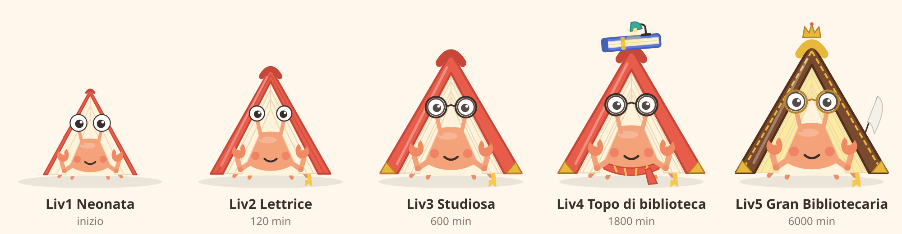

Lascia stare i 52 libri l'anno. Leggi 10 minuti al giorno: un granchietto che vive nel tuo libro cresce, trova conchiglie nuove e fa il tifo per te. Se salti un giorno, si addormenta.
Lista d'attesa in arrivo 🦀
In arrivo su Android e iPhone.

Premi avvia e leggi il tuo libro. Carta, Kindle, audiolibro: vale tutto.
Ogni minuto la nutre. Tieni la serie e sarà felice; salta un giorno e farà un pisolino.
Sali di livello e ricevi una card per le Storie: «Oggi ho letto 32 min · serie di 12 giorni».
